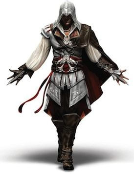

|  |
Ezio Auditore da Firenze
An Italian master assassin
Ezio was born into Italian nobility from Florence in the year 1459. His family had long been loyal to the Assassin Brotherhood, a fictional organization inspired by the real-life Order of Assassins dedicated to protecting peace and
freedom, but
Ezio did not learn about his Assassin heritage until his late teens, after most of his immediate kin were killed during the Pazzi conspiracy. His quest to track down those responsible for killing his family eventually sets him up against
the
villainous Templar Order led by the House of Borgia. Spending years to fight against Rodrigo and Cesare Borgia and their henchmen, he eventually re-establishes the Brotherhood as the dominant force in Italy. His further adventures lead him
to
Spain and the Ottoman Empire, where he is also essential in overcoming Templar threats and restoring the Assassins. After his retirement from the Order, he lives a peaceful life in rural Tuscany until his eventual death from a heart attack
in
1524.
|